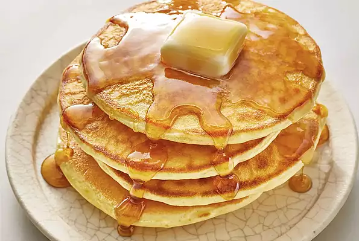

Pancakes

This is a great recipe that I found in my Grandma's recipe book. Judging from the weathered look of this recipe
card, this was a family favorite.
Ingredients
- 1 1/2 cups all-purpose flour
- 3 1/2 teaspoons baking powder
- 4 14 teaspoon salt
- 1 tablespoon white sugar
- 1/4 cups milk
- 1 eggs
- 3 tablespoon butter
Steps
- In a large bowl, sift together the flour, baking powder, salt and sugar. Make a well in the center and pour
in the milk, egg and melted butter; mix until smooth.
- Heat a lightly oiled griddle or frying pan over medium-high heat. Pour or scoop the batter onto the griddle,
using approximately 1/4 cup for each pancake. Brown on both sides and serve hot.
Nutrition Facts
Per Serving: 158 calories; protein 4.5g; carbohydrates 21.7g; fat 5.9g; cholesterol 37.7mg; sodium 503.6mg.